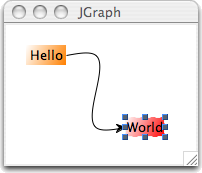

last mod: 25-sep-07 sciss
/* This example shows the use of SwingOSC with the free java graph visualization library JGraph. To run, you need to download JGraph from here: sourceforge.net/projects/jgraph From the manual: "JGraph is a mature, feature-rich open source graph visualization library written in Java. JGraph is written to be a fully Swing compatible component, both visually and in its design architecture. JGraph can be run on any system supporting Java version 1.4 or later" */ ( g = SwingOSC.default; g.waitForBoot({ // change this line to point the URL to your jgraph.jar installation location g.addClasses( "file:///Users/rutz/Documents/devel/JGraph/lib/jgraph.jar" ); }); ) // create a graph structure. // this is the hello-world example from the JGraph manual! // (we extended it to have antialiased painting and curvature edge) ( ~model = JavaObject( "org.jgraph.graph.DefaultGraphModel" ); ~cellViewFactory = JavaObject( "org.jgraph.graph.DefaultCellViewFactory" ); ~view = JavaObject( "org.jgraph.graph.GraphLayoutCache", nil, ~model, ~cellViewFactory ); ~cellViewFactory.destroy; ~graph = JavaObject( "org.jgraph.JGraph", nil, ~model, ~view ); ~graph.setAntiAliased( true ); ~cells = Array.newClear( 3 ); ~gc = JavaObject.getClass( "org.jgraph.graph.GraphConstants" ); ~cells[ 0 ] = JavaObject( "org.jgraph.graph.DefaultGraphCell", nil, "Hello" ); ~map = JavaObject.newFrom( ~cells[ 0 ], \getAttributes ); ~gc.setBounds( ~map, Rect( 20, 20, 40, 20 )); ~gc.setGradientColor( ~map, Color( 1.0, 0.5, 0.0 )); ~gc.setOpaque( ~map, true ); ~map.destroy; // reference not used any more ~port = JavaObject( "org.jgraph.graph.DefaultPort" ); ~cells[ 0 ].add( ~port ); ~port.destroy; ~cells[ 1 ] = JavaObject( "org.jgraph.graph.DefaultGraphCell", nil, "World" ); ~map = JavaObject.newFrom( ~cells[ 1 ], \getAttributes ); ~gc.setBounds( ~map, Rect( 140, 140, 40, 20 )); ~gc.setGradientColor( ~map, Color.red ); ~gc.setOpaque( ~map, true ); ~map.destroy; // reference not used any more ~port = JavaObject( "org.jgraph.graph.DefaultPort" ); ~cells[ 1 ].add( ~port ); ~port.destroy; ~edge = JavaObject( "org.jgraph.graph.DefaultEdge" ); ~child = JavaObject.newFrom( ~cells[ 0 ], \getChildAt, 0 ); ~edge.setSource( ~child ); ~child.destroy; ~child = JavaObject.newFrom( ~cells[ 1 ], \getChildAt, 0 ); ~edge.setTarget( ~child ); ~child.destroy; ~cells[ 2 ] = ~edge; ~map = JavaObject.newFrom( ~edge, \getAttributes ); ~gc.setLineEnd( ~map, 1 ); // GraphConstants.ARROW_CLASSIC ~gc.setEndFill( ~map, true ); ~map.destroy; // if you want curvature lines, execute these: ~map = JavaObject.newFrom( ~edge, \getAttributes ); ~gc.setLineStyle( ~map, 13 ); // GraphConstants.STYLE_SPLINE ~routing = JavaObject.getField( ~gc, \ROUTING_SIMPLE ); ~gc.setRouting( ~map, ~routing ); ~routing.destroy; ~map.destroy; ~view.insert( ~cells ); ) // make a visible GUI ( w = JSCWindow( "JGraph", Rect( 200, 200, 300, 300 )); JSCPlugView( w, w.view.bounds.insetBy( 2, 2 ), ~graph ).resize_( 5 ); w.onClose = { ~model.destroy; ~view.destroy; ~cells.do(_.destroy); ~gc.destroy; }; w.front; )
The result should look like this:
